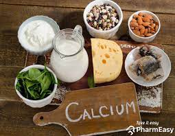

overweight Recommendations
You are overweight. It's essential to focus on a balanced diet and increase physical activity to reach a healthy weight. Consult a healthcare professional for personalized advice.
healthy eating Recommendations
focus on low carbs
-
fruit
Fresh, frozen, or canned fruits are great choices. Try fruits beyond apples and bananas such as mango, pineapple or kiwi fruit. When fresh fruit is not in season, try a frozen, canned, or dried variety. Be aware that dried and canned fruit may contain added sugars or syrups. Choose canned varieties of fruit packed in water or in its own juice.
-
Vegetables

Add variety to grilled or steamed vegetables with an herb such as rosemary. You can also sauté (panfry) vegetables in a non-stick pan with a small amount of cooking spray. Or try frozen or canned vegetables for a quick side dish—just microwave and serve. Look for canned vegetables without added salt, butter, or cream sauces. For variety, try a new vegetable each week.
-
Calcium-rich foods
In addition to fat-free and low-fat milk, consider low-fat and fat-free yogurts without added sugars. These come in a variety of flavors and can be a great dessert substitute.
-
Meats

If your favorite recipe calls for frying fish or breaded chicken, try healthier variations by baking or grilling. Maybe even try dry beans in place of meats. Ask friends and search the internet and magazines for recipes with fewer calories ― you might be surprised to find you have a new favorite dish!
-
Comfort Foods
You can still enjoy your favorite foods, even if they are high in calories, fat or added sugars. The key is eating them only once in a while. Some general tips for comfort foods:
- Eat them less often. If you normally eat these foods every day, cut back to once a week or once a month.
- Eat smaller amounts. If your favorite higher-calorie food is a chocolate bar, have a smaller size or only half a bar.
- Try a lower-calorie version. Use lower-calorie ingredients or prepare food differently. For example, if your macaroni and cheese recipe includes whole milk, butter, and full-fat cheese, try remaking it with non-fat milk, less butter, low-fat cheese, fresh spinach and tomatoes. Just remember to not increase your portion size.
Physical Activity
Regular physical activity provides immediate and long-term health benefits. Being physically active can improve your brain health, reduce the risk of disease, strengthen bones and muscles, and improve your ability to do everyday activities.
-
benfits of physical activity

activity also helps:
- Improve sleep quality.
- Reduce high blood pressure.
- Reduce risk for type 2 diabetes, heart attack, stroke, and several forms of cancer.
- Reduce arthritis pain and associated disability.
- Reduce risk for osteoporosis and falls.
- Reduce symptoms of depression and anxiety.